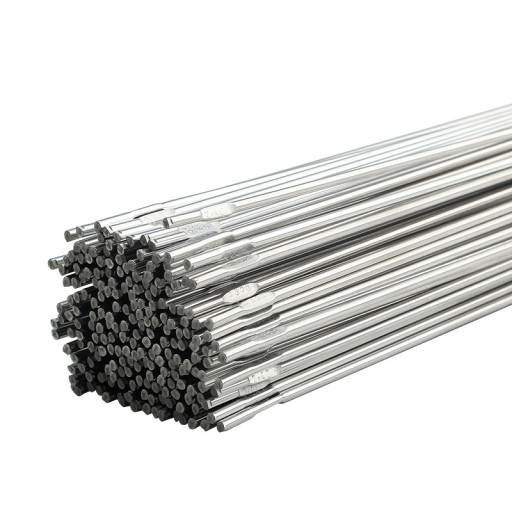

주기율표 13족에 3주기에 속하는 금속 원소로 원소기호는 Al, 원자량은 26.981g/mol, 녹는점은 660.32℃, 끓는점 2519℃, 밀도는 2.7g/cm3이다. 은백색의 가볍고 무른 금속으로 지구의 지각을 이루는 주 구성 원소 중 하나이다. 가볍고 내구성이 큰 특성을 이용해 원자재 및 재료로 많이 사용된다. 백색의 부드러운 금속으로 전성·연성이 커서 박이나 철사로 만들 수 있다. 성질은 순도에 따라 다르며 전기의 양도체이며 비저항은 구리의 약 1.6배이다. 비중으로 보아 전형적인 경금속이다. 공기 중에 방치하면 산화물의 박막을 생성하여 광택을 잃지만 내부까지 침식되지는 않는다. 알루미늄을 생산하는 원료는 산화알루미늄이 함유된 보크사이트를 사용하며, 보크사이트에서 산화알루미늄의 분리는 베이어 처리를 이용한다. 정제된 산화알루미늄은 홀-헤럴트 처리에 의해서 전기분해 되어 순수한 알루미늄(Al)으로 정제된다.
